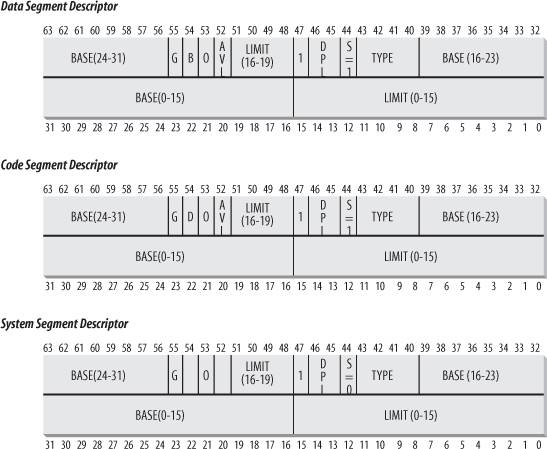
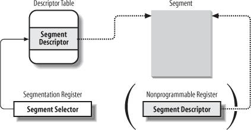
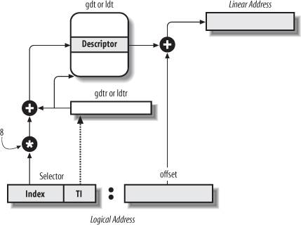

{% include JB/setup %}
{% raw %}
<div>


<a name="understandlk-CHP-2-SECT-2"></a>
<h3 class="docSection1Title">2.2. Segmentation in Hardware</h3><a name="IDX-CHP-2-0309"></a>
<a name="IDX-CHP-2-0310"></a>
<a name="IDX-CHP-2-0311"></a>
<p class="docText1">Starting with the 80286<a name="IDX-CHP-2-0312"></a> 
 model, Intel microprocessors perform address translation in two different ways called <span class="docEmphasis">real mode</span><a name="IDX-CHP-2-0313"></a> 
 and <span class="docEmphasis">protected mode</span><a name="IDX-CHP-2-0314"></a> 
. We'll focus in the next sections on address translation when protected mode is enabled. Real mode exists mostly to maintain processor compatibility with older models and to allow the operating system to bootstrap (see <a class="pcalibre5 docLink pcalibre1" href="understandlk-APP-A.html#understandlk-APP-A">Appendix A</a> for a short description of real mode).</p>
<a name="understandlk-CHP-2-SECT-2.1"></a>
<h4 class="docSection2Title">2.2.1. Segment Selectors and Segmentation Registers</h4>
<p class="docText1">A logical address consists of two parts: a segment identifier and an offset that specifies the relative address within the segment. The segment identifier is a 16-bit field called the <span class="docEmphasis">Segment Selector</span> (see <a class="pcalibre5 docLink pcalibre1" href="#understandlk-CHP-2-FIG-2">Figure 2-2</a>), while the offset is a 32-bit field. We'll describe the fields of Segment Selectors in the section "<a class="pcalibre5 docLink pcalibre1" href="#understandlk-CHP-2-SECT-2.3">Fast Access to Segment Descriptors</a>" later in this chapter.</p>
<a name="understandlk-CHP-2-FIG-2"></a><p class="calibre14"><center class="calibre8">
<h5 class="docFigureTitle">Figure 2-2. Segment Selector format</h5>
</center></p><br class="calibre7"/>
<p class="docText1">To make it easy to retrieve segment selectors<a name="IDX-CHP-2-0315"></a> 
 quickly, the processor provides <span class="docEmphasis">segmentation registers</span><a name="IDX-CHP-2-0316"></a> 
 whose only purpose is to hold Segment Selectors; these registers are called <tt class="calibre25">cs</tt>, <tt class="calibre25">ss</tt>, <tt class="calibre25">ds</tt>, <tt class="calibre25">es</tt>, <tt class="calibre25">fs</tt>, and <tt class="calibre25">gs</tt>. Although there are only six of them, a program can reuse the same segmentation register for different purposes by saving its content in memory and then restoring it later.</p>
<p class="docText1">Three of the six segmentation registers have specific purposes:</p>
<dl class="docText1"><dt class="calibre7"><br class="calibre7"/><p class="calibre14"><span class="docPubcolor"><span class="docPubcolor"><span class="docMonofont">cs</span></span></span></p></dt>
<dd class="calibre20"><p class="docList">The code segment register, which points to a segment containing program instructions</p></dd><dt class="calibre7"><br class="calibre7"/><p class="calibre14"><span class="docPubcolor"><span class="docPubcolor"><span class="docMonofont">ss</span></span></span></p></dt>
<dd class="calibre20"><p class="docList">The stack segment register, which points to a segment containing the current program stack</p></dd><dt class="calibre7"><br class="calibre7"/><p class="calibre14"><span class="docPubcolor"><span class="docPubcolor"><span class="docMonofont">ds</span></span></span></p></dt>
<dd class="calibre20"><p class="docList">The data segment register, which points to a segment containing global and static data</p></dd></dl>
<p class="docText1">The remaining three segmentation registers are general purpose and may refer to arbitrary data segments.</p>
<p class="docText1">The <tt class="calibre25">cs</tt> register has another important function: it includes a 2-bit field that specifies the Current Privilege Level (CPL) of the CPU. The value 0 denotes the highest privilege level, while the value 3 denotes the lowest one. Linux uses only levels 0 and 3, which are respectively called Kernel Mode and User Mode.</p>
<a name="understandlk-CHP-2-SECT-2.2"></a>
<h4 class="docSection2Title">2.2.2. Segment Descriptors</h4><a name="IDX-CHP-2-0317"></a>
<a name="IDX-CHP-2-0318"></a>
<a name="IDX-CHP-2-0319"></a>
<a name="IDX-CHP-2-0320"></a>
<a name="IDX-CHP-2-0321"></a>
<a name="IDX-CHP-2-0322"></a>
<a name="IDX-CHP-2-0323"></a>
<a name="IDX-CHP-2-0324"></a>
<a name="IDX-CHP-2-0325"></a>
<a name="IDX-CHP-2-0326"></a>
<a name="IDX-CHP-2-0327"></a>
<a name="IDX-CHP-2-0328"></a>
<p class="docText1">Each segment is represented by an 8-byte <span class="docEmphasis">Segment Descriptor</span> that describes the segment characteristics. Segment Descriptors are stored either in the <span class="docEmphasis">Global Descriptor Table</span> (<span class="docEmphasis">GDT</span><a name="IDX-CHP-2-0329"></a> 
) or in the <span class="docEmphasis">Local Descriptor Table</span>(<span class="docEmphasis">LDT</span>).</p>
<p class="docText1">Usually only one GDT is defined, while each process is permitted to have its own LDT if it needs to create additional segments besides those stored in the GDT. The address and size of the GDT in main memory are contained in the <tt class="calibre25">gdtr</tt><a name="IDX-CHP-2-0330"></a> 
 control register, while the address and size of the currently used LDT are contained in the <tt class="calibre25">ldtr</tt><a name="IDX-CHP-2-0331"></a> 
 control register.</p>
<p class="docText1"><a class="pcalibre5 docLink pcalibre1" href="#understandlk-CHP-2-FIG-3">Figure 2-3</a> illustrates the format of a Segment Descriptor; the meaning of the various fields is explained in <a class="pcalibre5 docLink pcalibre1" href="#understandlk-CHP-2-TABLE-1">Table 2-1</a>.</p>
<a name="understandlk-CHP-2-TABLE-1"></a><p class="calibre14"><table cellspacing="0" frame="hsides" rules="all" cellpadding="4" width="100%" class="calibre15"><caption class="calibre33"><h5 class="docFigureTitle">Table 2-1. Segment Descriptor fields</h5></caption><colgroup class="calibre16"><col class="calibre17"/><col class="calibre17"/></colgroup><thead class="calibre18"><tr class="calibre34"><th class="thead" scope="col"><p class="docText1"><span class="calibre5">Field name</span></p></th><th class="thead" scope="col"><p class="docText1"><span class="calibre5">Description</span></p></th></tr></thead><tr class="calibre2"><td class="docTableCell"><p class="docText2"><tt class="calibre25">Base</tt></p></td><td class="docTableCell"><p class="docText2">Contains the linear address of the first byte of the segment.</p></td></tr><tr class="calibre2"><td class="docTableCell"><p class="docText2"><tt class="calibre25">G</tt></p></td><td class="docTableCell"><p class="docText2"><span class="docEmphasis">Granularity flag</span>: if it is cleared (equal to 0), the segment size is expressed in bytes; otherwise, it is expressed in multiples of 4096 bytes.</p></td></tr><tr class="calibre2"><td class="docTableCell"><p class="docText2"><tt class="calibre25">Limit</tt></p></td><td class="docTableCell"><p class="docText2">Holds the offset of the last memory cell in the segment, thus binding the segment length. When <tt class="calibre25">G</tt> is set to 0, the size of a segment may vary between 1 byte and 1 MB; otherwise, it may vary between 4 KB and 4 GB.</p></td></tr><tr class="calibre2"><td class="docTableCell"><p class="docText2"><tt class="calibre25">S</tt></p></td><td class="docTableCell"><p class="docText2"><span class="docEmphasis">System flag</span>: if it is cleared, the segment is a <span class="docEmphasis">system segment</span> that stores critical data structures such as the Local Descriptor Table; otherwise, it is a normal code or data segment.</p></td></tr><tr class="calibre2"><td class="docTableCell"><p class="docText2"><tt class="calibre25">Type</tt></p></td><td class="docTableCell"><p class="docText2">Characterizes the segment type and its access rights (see the text that follows this table).</p></td></tr><tr class="calibre2"><td class="docTableCell"><p class="docText2"><tt class="calibre25">DPL</tt><a name="IDX-CHP-2-0332"></a>
</p></td><td class="docTableCell"><p class="docText2"><span class="docEmphasis">Descriptor Privilege Level</span>: used to restrict accesses to the segment. It represents the minimal CPU privilege level requested for accessing the segment. Therefore, a segment with its DPL set to 0 is accessible only when the CPL is 0  that is, in Kernel Mode  while a segment with its DPL set to 3 is accessible with every CPL value.</p></td></tr><tr class="calibre2"><td class="docTableCell"><p class="docText2">P</p></td><td class="docTableCell"><p class="docText2"><span class="docEmphasis">Segment-Present flag</span><a name="IDX-CHP-2-0333"></a> 
: is equal to 0 if the segment is not stored currently in main memory. Linux always sets this flag (bit 47) to 1, because it never swaps out whole segments to disk.</p></td></tr><tr class="calibre2"><td class="docTableCell"><p class="docText2"><tt class="calibre25">D</tt> or <tt class="calibre25">B</tt></p></td><td class="docTableCell"><p class="docText2">Called <tt class="calibre25">D</tt> or <tt class="calibre25">B</tt> depending on whether the segment contains code or data. Its meaning is slightly different in the two cases, but it is basically set (equal to 1) if the addresses used as segment offsets are 32 bits long, and it is cleared if they are 16 bits long (see the Intel manual for further details).</p></td></tr><tr class="calibre2"><td class="docTableCell"><p class="docText2"><tt class="calibre25">AVL</tt></p></td><td class="docTableCell"><p class="docText2">May be used by the operating system, but it is ignored by Linux.</p></td></tr></table></p><br class="calibre7"/>
<p class="docText1">There are several types of segments, and thus several types of Segment Descriptors. The following list shows the types that are widely used in Linux.</p>
<dl class="docText1"><dt class="calibre7"><br class="calibre7"/><p class="calibre14"><span class="docPubcolor"><span class="docEmphasis">Code Segment Descriptor</span></span></p></dt>
<dd class="calibre20"><p class="docList">Indicates that the Segment Descriptor refers to a code segment; it may be included either in the GDT or in the LDT. The descriptor has the <tt class="calibre25">S</tt> flag set (non-system segment).</p></dd><dt class="calibre7"><br class="calibre7"/><p class="calibre14"><span class="docPubcolor"><span class="docEmphasis">Data Segment Descriptor</span></span></p></dt>
<dd class="calibre20"><p class="docList">Indicates that the Segment Descriptor refers to a data segment; it may be included either in the GDT or in the LDT. The descriptor has the <tt class="calibre25">S</tt> flag set. Stack segments are implemented by means of generic data segments.</p></dd><dt class="calibre7"><br class="calibre7"/><p class="calibre14"><span class="docPubcolor"><span class="docEmphasis">Task State Segment Descriptor (TSSD)</span></span></p></dt>
<dd class="calibre20"><p class="docList">Indicates that the Segment Descriptor refers to a Task State Segment (TSS)  that is, a segment used to save the contents of the processor registers (see the section "<a class="pcalibre5 docLink pcalibre1" href="understandlk-CHP-3-SECT-3.html#understandlk-CHP-3-SECT-3.2">Task State Segment</a>" in <a class="pcalibre5 docLink pcalibre1" href="understandlk-CHP-3.html#understandlk-CHP-3">Chapter 3</a>); it can appear only in the GDT. The corresponding <tt class="calibre25">Type</tt> field has the value 11 or 9, depending on whether the corresponding process is currently executing on a CPU. The <tt class="calibre25">S</tt> flag of such descriptors is set to 0.</p>
<a name="understandlk-CHP-2-FIG-3"></a><p class="calibre14"><center class="calibre8">
<h5 class="docFigureTitle1">Figure 2-3. Segment Descriptor format</h5>
</center></p>
</dd><dt class="calibre7"><br class="calibre7"/><p class="calibre14"><span class="docPubcolor"><span class="docEmphasis">Local Descriptor Table Descriptor (LDTD)</span></span></p></dt>
<dd class="calibre20"><p class="docList">Indicates that the Segment Descriptor refers to a segment containing an LDT; it can appear only in the GDT. The corresponding <tt class="calibre25">Type</tt> field has the value 2. The <tt class="calibre25">S</tt> flag of such descriptors is set to 0. The next section shows how 80 x 86 processors are able to decide whether a segment descriptor is stored in the GDT or in the LDT of the process.</p></dd></dl>
<a name="understandlk-CHP-2-SECT-2.3"></a>
<h4 class="docSection2Title">2.2.3. Fast Access to Segment Descriptors</h4><a name="IDX-CHP-2-0334"></a>
<p class="docText1">We recall that logical addresses consist of a 16-bit Segment Selector and a 32-bit Offset, and that segmentation registers store only the Segment Selector.</p>
<p class="docText1">To speed up the translation of logical addresses into linear addresses, the 80 x 86 processor provides an additional nonprogrammable registerthat is, a register that cannot be set by a programmerfor each of the six programmable segmentation registers. Each nonprogrammable register contains the 8-byte Segment Descriptor (described in the previous section) specified by the Segment Selector contained in the corresponding segmentation register. Every time a Segment Selector is loaded in a segmentation register, the corresponding Segment Descriptor is loaded from memory into the matching nonprogrammable CPU register. From then on, translations of logical addresses referring to that segment can be performed without accessing the GDT or LDT stored in main memory; the processor can refer only directly to the CPU register containing the Segment Descriptor. Accesses to the GDT or LDT are necessary only when the contents of the segmentation registers change (see <a class="pcalibre5 docLink pcalibre1" href="#understandlk-CHP-2-FIG-4">Figure 2-4</a>).</p>
<a name="understandlk-CHP-2-FIG-4"></a><p class="calibre14"><center class="calibre8">
<h5 class="docFigureTitle">Figure 2-4. Segment Selector and Segment Descriptor</h5>
</center></p><br class="calibre7"/>
<p class="docText1">Any Segment Selector includes three fields that are described in Table 2-2.</p>
<a name="understandlk-CHP-2-TABLE-2"></a><p class="calibre14"><table cellspacing="0" frame="hsides" rules="all" cellpadding="4" width="100%" class="calibre15"><caption class="calibre33"><h5 class="docFigureTitle">Table 2-2. Segment Selector fields</h5></caption><colgroup class="calibre16"><col class="calibre17"/><col class="calibre17"/></colgroup><thead class="calibre18"><tr class="calibre34"><th class="thead" scope="col"><p class="docText1"><span class="calibre5">Field name</span></p></th><th class="thead" scope="col"><p class="docText1"><span class="calibre5">Description</span></p></th></tr></thead><tr class="calibre2"><td class="docTableCell"><p class="docText2"><tt class="calibre25">index</tt></p></td><td class="docTableCell"><p class="docText2">Identifies the Segment Descriptor entry contained in the GDT or in the LDT (described further in the text following this table).</p></td></tr><tr class="calibre2"><td class="docTableCell"><p class="docText2"><tt class="calibre25">TI</tt></p></td><td class="docTableCell"><p class="docText2"><span class="docEmphasis">Table Indicator</span><a name="IDX-CHP-2-0335"></a> 
: specifies whether the Segment Descriptor is included in the GDT (TI = 0) or in the LDT (TI = 1).</p></td></tr><tr class="calibre2"><td class="docTableCell"><p class="docText2"><tt class="calibre25">RPL</tt></p></td><td class="docTableCell"><p class="docText2"><span class="docEmphasis">Requestor Privilege Level</span><a name="IDX-CHP-2-0336"></a> 
: specifies the Current Privilege Level of the CPU when the corresponding Segment Selector is loaded into the <tt class="calibre25">cs</tt> register; it also may be used to selectively weaken the processor privilege level when accessing data segments (see Intel documentation for details).</p></td></tr></table></p><br class="calibre7"/>
<p class="docText1">Because a Segment Descriptor is 8 bytes long, its relative address inside the GDT or the LDT is obtained by multiplying the 13-bit index field of the Segment Selector by 8. For instance, if the GDT is at <tt class="calibre25">0x00020000</tt> (the value stored in the <tt class="calibre25">gdtr</tt> register) and the index specified by the Segment Selector is 2, the address of the corresponding Segment Descriptor is <tt class="calibre25">0x00020000</tt> + <tt class="calibre25">(2</tt> x <tt class="calibre25">8)</tt>, or <tt class="calibre25">0x00020010</tt>.</p>
<p class="docText1">The first entry of the GDT is always set to 0. This ensures that logical addresses with a null Segment Selector will be considered invalid, thus causing a processor exception. The maximum number of Segment Descriptors that can be stored in the GDT is 8,191 (i.e., 2<sup class="calibre37">13</sup>-1).</p>
<a name="understandlk-CHP-2-SECT-2.4"></a>
<h4 class="docSection2Title">2.2.4. Segmentation Unit</h4><a name="IDX-CHP-2-0337"></a>
<a name="IDX-CHP-2-0338"></a>
<p class="docText1"><a class="pcalibre5 docLink pcalibre1" href="#understandlk-CHP-2-FIG-5">Figure 2-5</a> shows in detail how a logical address is translated into a corresponding linear address. The <span class="docEmphasis">segmentation unit</span> performs the following operations:</p>
<ul class="calibre11"><li class="calibre12"><p class="docText1">Examines the <tt class="calibre25">TI</tt> field of the Segment Selector to determine which Descriptor Table stores the Segment Descriptor. This field indicates that the Descriptor is either in the GDT (in which case the segmentation unit gets the base linear address of the GDT from the <tt class="calibre25">gdtr</tt> register) or in the active LDT (in which case the segmentation unit gets the base linear address of that LDT from the <tt class="calibre25">ldtr</tt><a name="IDX-CHP-2-0339"></a> 
 register).</p></li><li class="calibre12"><p class="docText1">Computes the address of the Segment Descriptor from the <tt class="calibre25">index</tt> field of the Segment Selector. The <tt class="calibre25">index</tt> field is multiplied by 8 (the size of a Segment Descriptor), and the result is added to the content of the <tt class="calibre25">gdtr</tt> or <tt class="calibre25">ldtr</tt> register.</p></li><li class="calibre12"><p class="docText1">Adds the offset of the logical address to the <tt class="calibre25">Base</tt> field of the Segment Descriptor, thus obtaining the linear address.</p><a name="understandlk-CHP-2-FIG-5"></a><p class="calibre14"><center class="calibre8">
<h5 class="docFigureTitle">Figure 2-5. Translating a logical address</h5>
</center></p></li></ul>
<p class="docText1">Notice that, thanks to the nonprogrammable registers associated with the segmentation registers, the first two operations need to be performed only when a segmentation register has been changed.</p>
<a href="31071535.html"></a>
<br class="calibre7"/>

</div>

{% endraw %}

